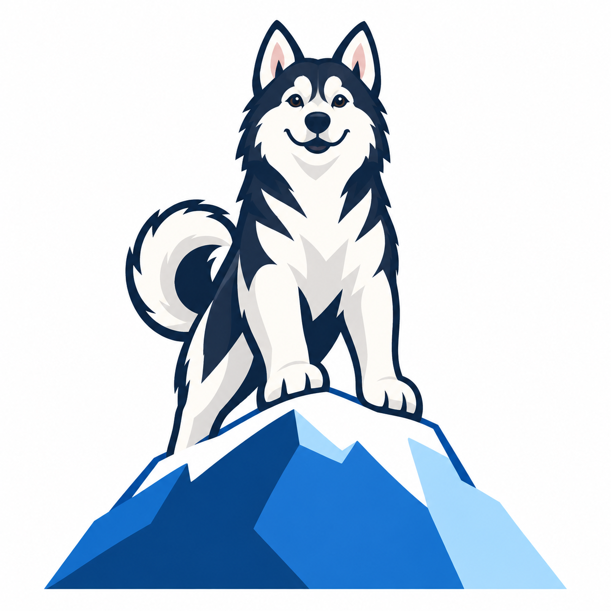
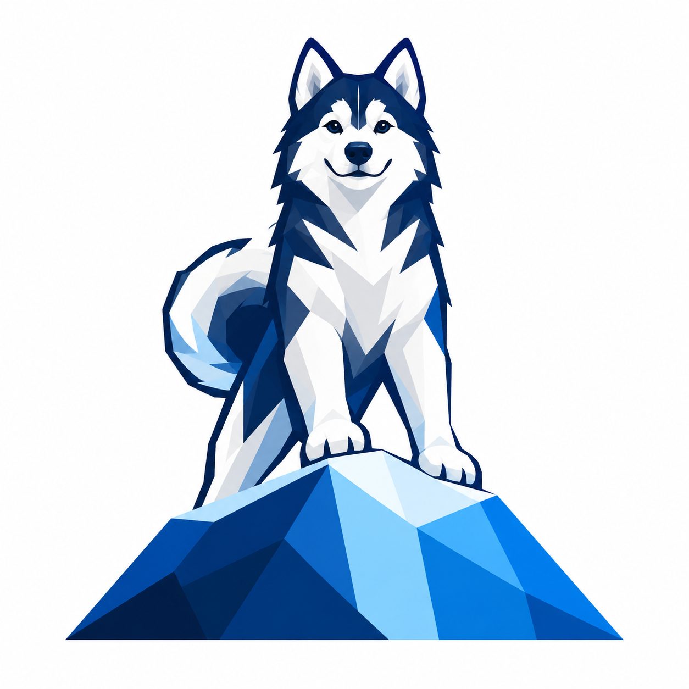
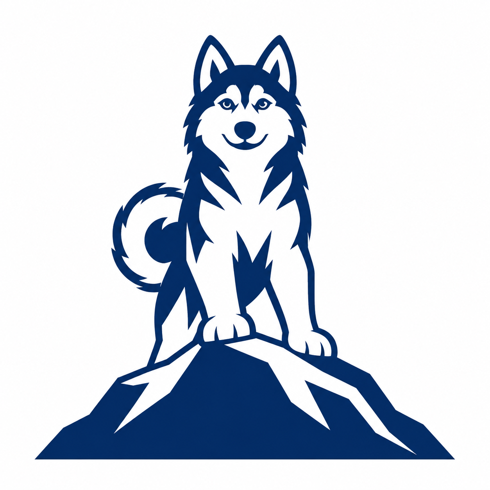
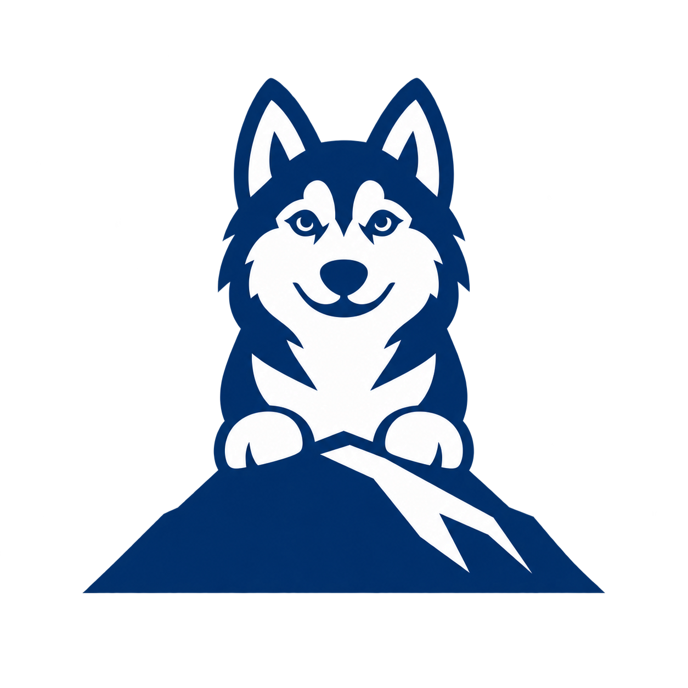

01 · illustration direction
Friendly mascot

Keeps the reference's warmth. Best suited to a larger illustration; still too detailed for a tiny logo.
Actual display sizes
163248
Baltor · new directions from your reference
Latest direction: Mature husky profiles and negative-space variations, with dedicated 16- and 32-pixel SVGs.
Small-icon correction: Compare the dedicated 16- and 32-pixel SVG marks. These large raster concepts lose too much detail when reduced.
The earlier SVGs lost the reference's character. These studies preserve the frontal pose and broad ice ledge, then simplify in stages. Click any concept to inspect the full image.
01 · illustration direction

Keeps the reference's warmth. Best suited to a larger illustration; still too detailed for a tiny logo.
Actual display sizes
02 · geometric direction

A clearer animal silhouette with deliberate facets. The next pass should remove still more planes.
Actual display sizes
03 · logo direction

A stronger starting point for a vector mark. It keeps the complete pose but can lose more fur detail.
Actual display sizes
04 · compact large-format direction

Face, two paws and one summit. The shorter body gives the face more room at header size.
Actual display sizes
Compact mark at 64 pixels. A final vector redraw should remove eye highlights and toe notches.
The transparent concept needs a brighter or reversed outline for dark surfaces; this preview exposes that remaining issue.
These are generated PNG design concepts, not finished SVG assets. The first three have white backgrounds; the compact mark has transparency. A final logo needs a controlled vector redraw and a simpler 16-pixel icon. Design notes · Exact generation prompts · Earlier SVG exploration